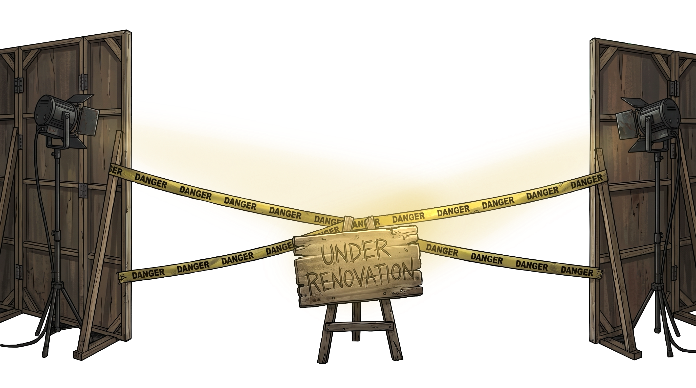

Кімната 1 / 5
Наступний рівень: 22 год
Акваріум
Не встановлено0 / 5
Спільна прикормка
Запас прикормки0
АвтогодівницяВручну
Живець 0 риб
У садку живець втрачає час життя.
Садок0 риб

Ремонт до рівня 202:00:00